자료: NYC Open Data 311 Service Requests (2025-11-01 ~ 2026-10-31, 전처리본) · 기온: Open-Meteo 과거 기상 자료 · 인구: 2020 미국 센서스
차례
1
숫자로 만나는 311
1년치 396만 건의 신고를 처음 펼쳤을 때 눈에 들어오는 숫자들부터 봅니다.
Q001 – Q008
2
달력이 만든 민원
독립기념일, 크리스마스, 새해, 서머타임처럼 달력의 특별한 날이 신고 장부에 남긴 흔적입니다.
Q009 – Q016
3
날씨가 바꾸는 민원
기온과 눈보라가 어떤 민원은 몇 배로 키우고, 어떤 민원은 그대로 두는지 비교합니다.
Q017 – Q026
4
소음의 다른 얼굴들
밤 파티 소음 말고도 개, 헬기, 아이스크림 트럭, 공사장까지 소음에는 여러 얼굴이 있습니다.
Q027 – Q034
5
동물의 도시
쥐와 비둘기부터 너구리, 사슴, 수탉까지 뉴욕 신고 장부에 등장하는 동물들입니다.
Q035 – Q046
6
도로 위의 신경전
주차, 차고 앞, 버려진 차와 자전거, 포트홀까지 길 위에서 벌어지는 다툼입니다.
Q047 – Q055
7
집이 아프다
집주인에게 고쳐 달라고 할 일을 시 주택국(HPD)에 신고한 기록으로 본 뉴욕의 집입니다.
Q056 – Q064
8
한 주소가 바꾼 통계
어떤 주소는 1년에 수만 건을 신고합니다. 몇몇 '프로 신고러'가 통계를 얼마나 흔드는지 봅니다.
Q065 – Q075
9
경찰이 도착했을 때
경찰(NYPD)이 출동한 뒤 남긴 결과 문장을 분류해, 신고가 실제로 어떻게 끝나는지 봅니다.
Q076 – Q085
10
답변서에 숨은 이야기
다른 기관들이 남긴 처리 결과 문장과 처리 상태에서 '가 보니 없었다', '이미 접수됨' 같은 이야기를 찾습니다.
Q086 – Q093
11
전화·웹·앱
같은 불편이라도 어떤 건 앱으로, 어떤 건 전화로 신고됩니다.
Q094 – Q096
12
이런 것도 신고해?
칭찬, 분실물, 견인차, 1년에 단 한 건뿐인 민원까지 311의 별난 구석입니다.
Q097 – Q100
◆
맺음말 · 데이터와 방법 메모
100개의 답에서 보인 것, 그리고 숫자를 만든 규칙
Q002예시
7.9초
신고 1건당 간격 — 2번 질문의 큰 숫자
읽는 법
한 쪽에 질문 두 개. 질문마다 큰 숫자 하나, 그림 하나, 한 줄 답이 있습니다. 몇몇 질문은 한 쪽 전체를 씁니다.
그림에서 주황색이 답이 가리키는 곳입니다. 나머지는 비교를 위한 회색입니다.
작은 글씨 주의는 숫자를 읽을 때 알아 둘 점입니다. 숫자를 만든 규칙은 책 끝 '데이터와 방법 메모'에 모았습니다.
CHAPTER 1 · 질문 8개
01
숫자로 만나는 311
1년치 396만 건의 신고를 처음 펼쳤을 때 눈에 들어오는 숫자들부터 봅니다.
이 장의 놀라운 숫자396만 건1년 동안 311에 들어온 신고
Q001뉴욕은 1년에 311에 몇 번 신고할까?
Q002311 신고는 몇 초에 한 번 들어올까?
Q003뉴욕에서 가장 많이 신고되는 민원은?
Q004경찰이 받는 신고는 전체의 몇 %?
Q005민원 194종, 상위 10종이 차지하는 몫은?
Q006신고가 가장 많이 쏟아진 날은?
Q0071년 중 가장 조용했던 날은?
Q008가장 바쁜 요일과 한가한 요일 차이는?
Q001
뉴욕은 1년에 311에 몇 번 신고할까?
396만 건
1년 신고 수
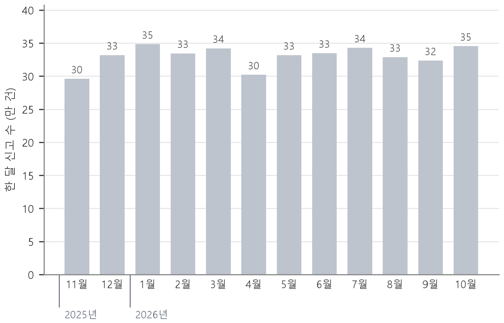
1년 동안 약 396만 건, 하루 평균 1만 건이 넘는다.
첫날과 마지막 날은 밤 9시 무렵에서 잘려 있어, 하루 단위 비교(평균·최대·최소)에서는 이 이틀을 뺐습니다.
Q002
311 신고는 몇 초에 한 번 들어올까?
7.9초
신고 1건당 간격
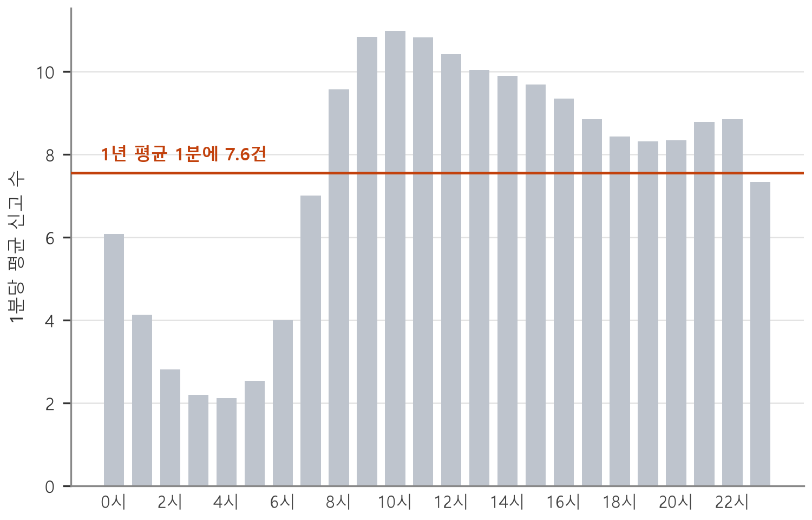
평균 7.9초마다 한 건, 1분에 7.6건꼴이다. 오전 10시에는 1분에 11건까지 오른다.
Q003
뉴욕에서 가장 많이 신고되는 민원은?
15.6%
불법주차 비중
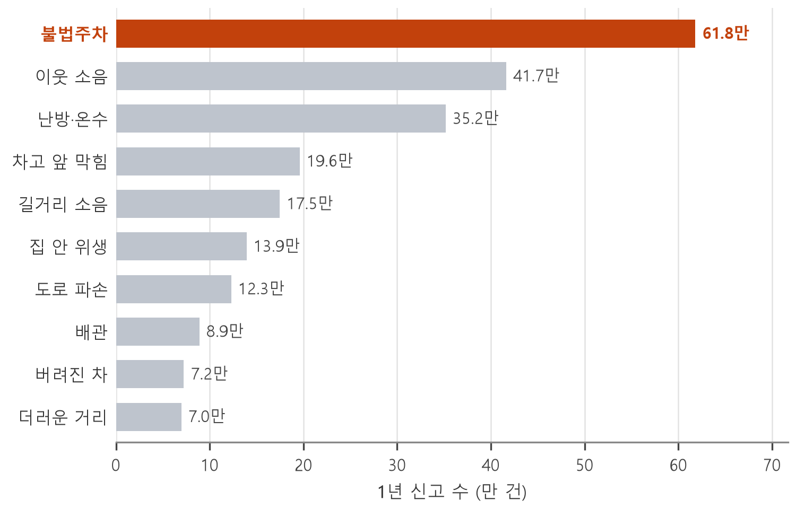
불법주차가 61.8만 건으로 1위, 전체의 15.6%.
Q004
경찰이 받는 신고는 전체의 몇 %?
43.4%
NYPD 담당 비중
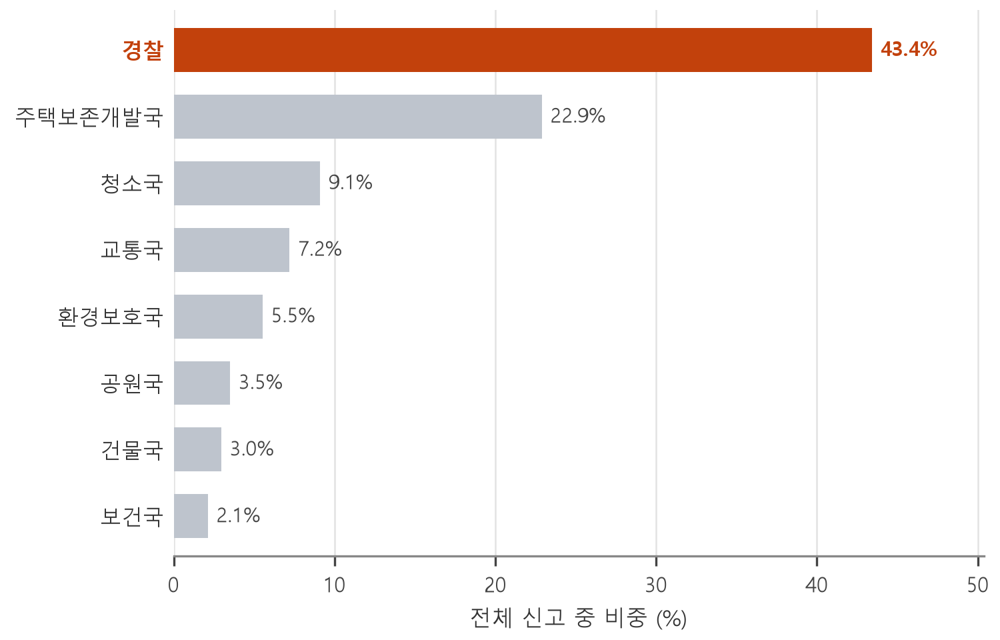
10건 중 4건 넘게(43.4%)가 경찰(NYPD) 몫이다.
Q005
민원 194종, 상위 10종이 차지하는 몫은?
56.8%
상위 10종 비중
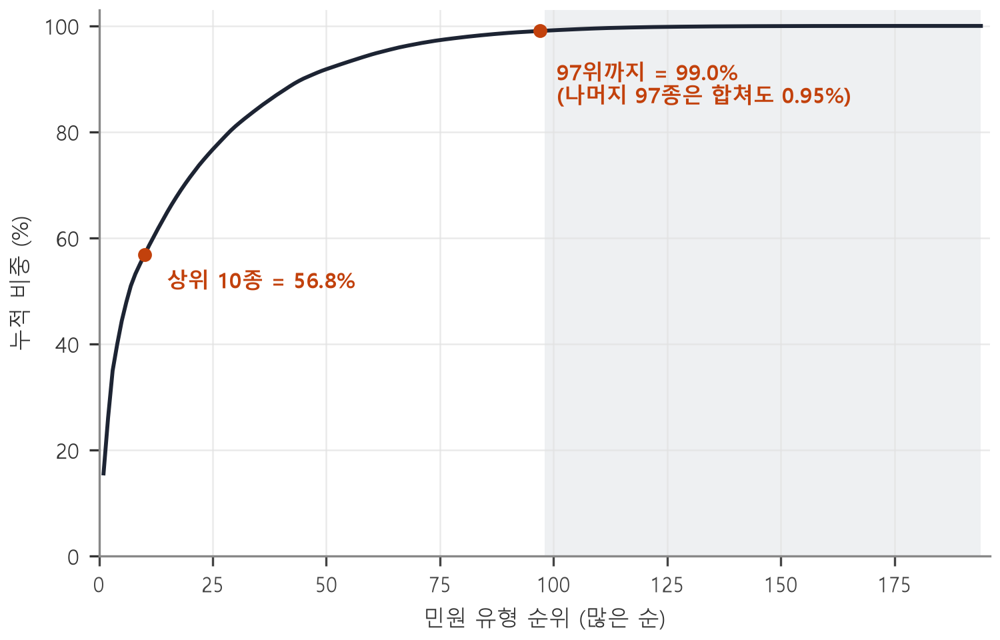
상위 10종이 56.8%, 하위 97종은 다 합쳐도 1%가 안 된다.
Q006
신고가 가장 많이 쏟아진 날은?
2.1배
평소 대비 최다일
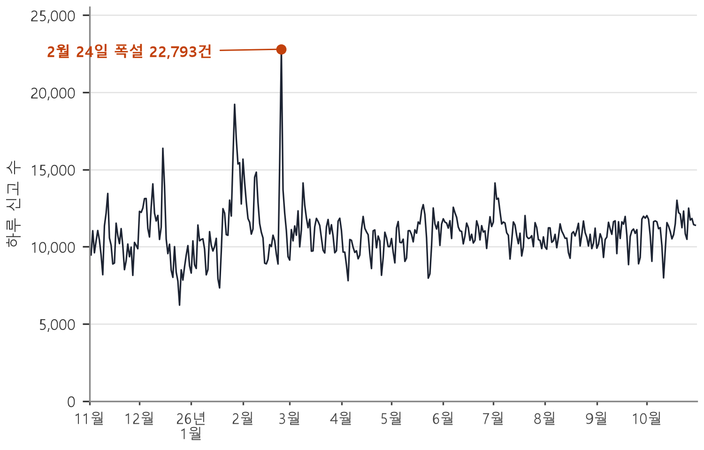
2026년 2월 24일 폭설일. 하루 2만2,793건으로 평소의 2배, 그중 절반이 눈·얼음 신고였다.
Q007
1년 중 가장 조용했던 날은?
57%
크리스마스 ÷ 평소 하루
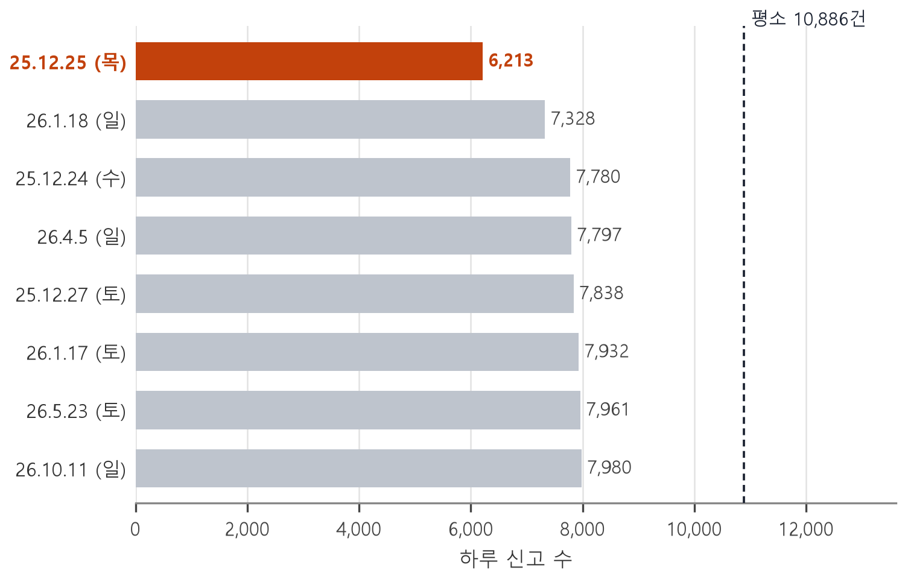
크리스마스. 6,213건으로 평소의 57%뿐이었다.
Q008
가장 바쁜 요일과 한가한 요일 차이는?
1.2배
화요일/토요일
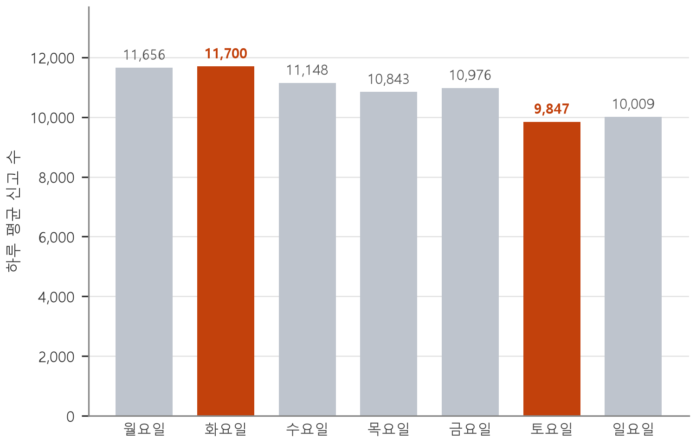
화요일 하루 1만1,700건, 토요일 9,847건. 평일이 주말보다 바쁘다.
CHAPTER 2 · 질문 8개
02
달력이 만든 민원
독립기념일, 크리스마스, 새해, 서머타임처럼 달력의 특별한 날이 신고 장부에 남긴 흔적입니다.
이 장의 놀라운 숫자75배7월 4일 불꽃놀이 신고, 평소 하루 대비
Q009독립기념일 불꽃놀이 신고는 평소 몇 배?
Q010불꽃놀이 신고는 언제 몰릴까?
Q0117월 4일 밤, 불꽃 신고 최고조는 몇 시?
Q012크리스마스에 오히려 늘어난 민원은?
Q013크리스마스에 사라진 민원은?
Q014새해 첫 1시간, 불꽃 신고는 평소 몇 배?
Q015서머타임 시작일, 새벽 2시 신고는?
Q016이웃 소음 신고가 가장 많았던 날은?
Q009
독립기념일 불꽃놀이 신고는 평소 몇 배?
75배
7월 4일 ÷ 하루 평균
7월 4일 하루 2,257건, 1년 하루 평균의 75배.
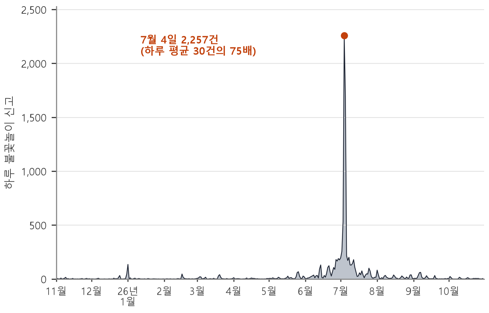
Q010
불꽃놀이 신고는 언제 몰릴까?
66%
6/15~7/10 비중
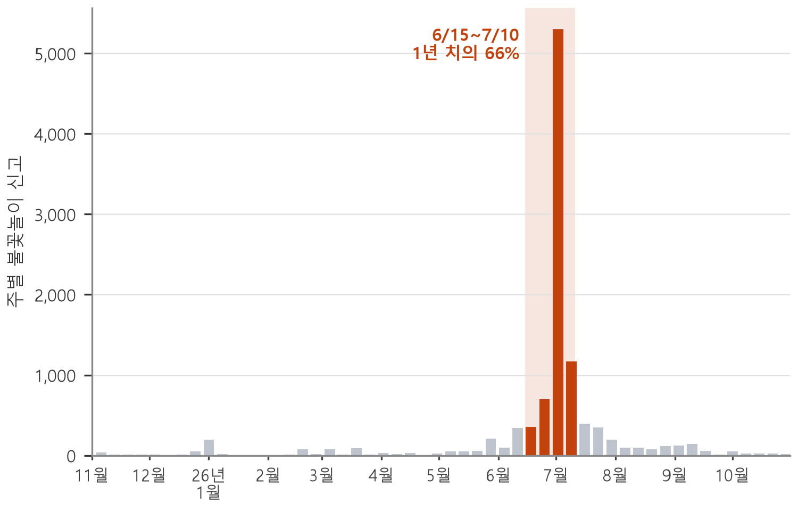
1년 치의 66%가 6월 15일~7월 10일, 한 달 안에 몰린다.
Q011
7월 4일 밤, 불꽃 신고 최고조는 몇 시?
밤 9시
피크 시각
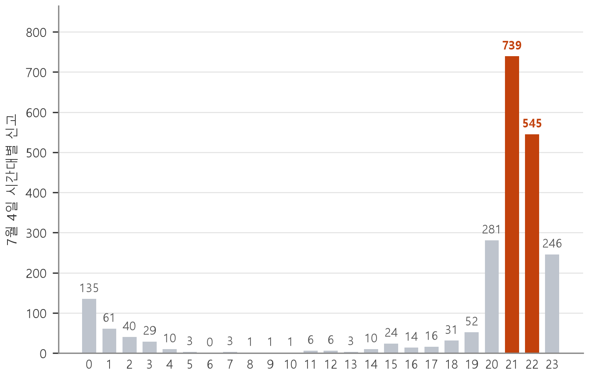
밤 9시대에 739건. 9~10시 두 시간이 하루의 57%.
Q012
크리스마스에 오히려 늘어난 민원은?
1.6배
이웃 소음 성탄/평소
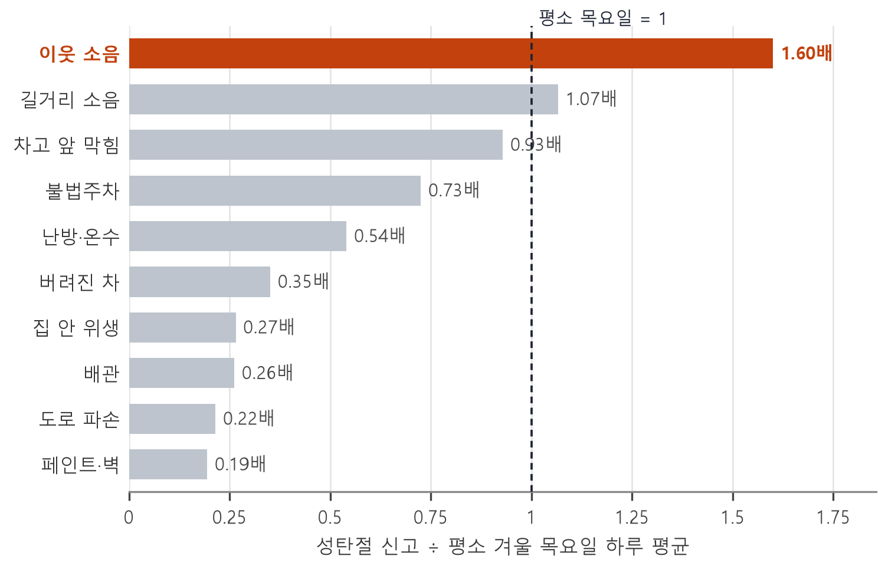
이웃 소음. 평소 겨울 목요일보다 1.6배 많았다.
성탄 이브에서 넘어온 성탄 0시대가 그날 이웃 소음의 정점입니다. 계절 효과가 섞이지 않게 같은 겨울(11~1월)의 다른 목요일 11일과 비교했고, 브롱크스 북부의 한 주소(8장)는 빼고 셌습니다.
Q013
크리스마스에 사라진 민원은?
1건
성탄 미수거 신고
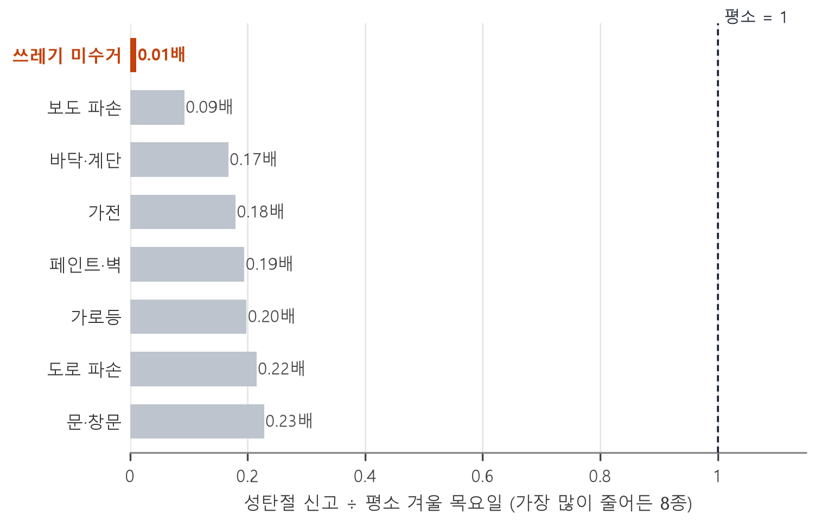
쓰레기 미수거 신고가 단 1건. 평소 목요일엔 95건.
성탄절은 청소국 수거가 쉬는 날이라 '미수거'라는 일 자체가 생기지 않는 것으로 보입니다. 눈 민원은 그날 날씨 탓이라 비교에서 뺐습니다.
Q014
새해 첫 1시간, 불꽃 신고는 평소 몇 배?
25배
새해 0시 ÷ 평소 0시
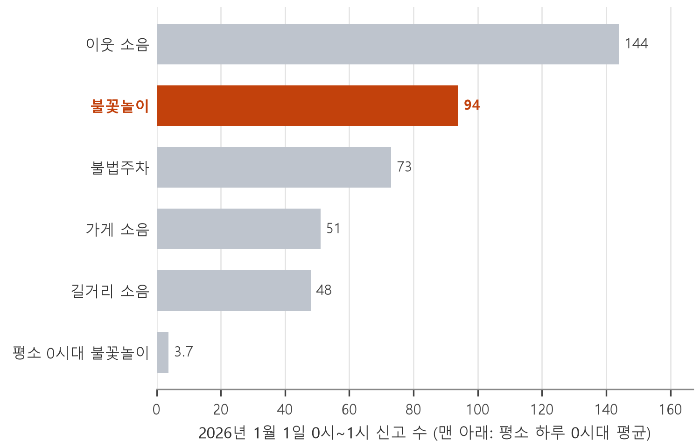
1월 1일 0시대 94건. 평소 0시대 평균 3.7건의 25배다.
Q015
서머타임 시작일, 새벽 2시 신고는?
1건
평소 169건 → 1건
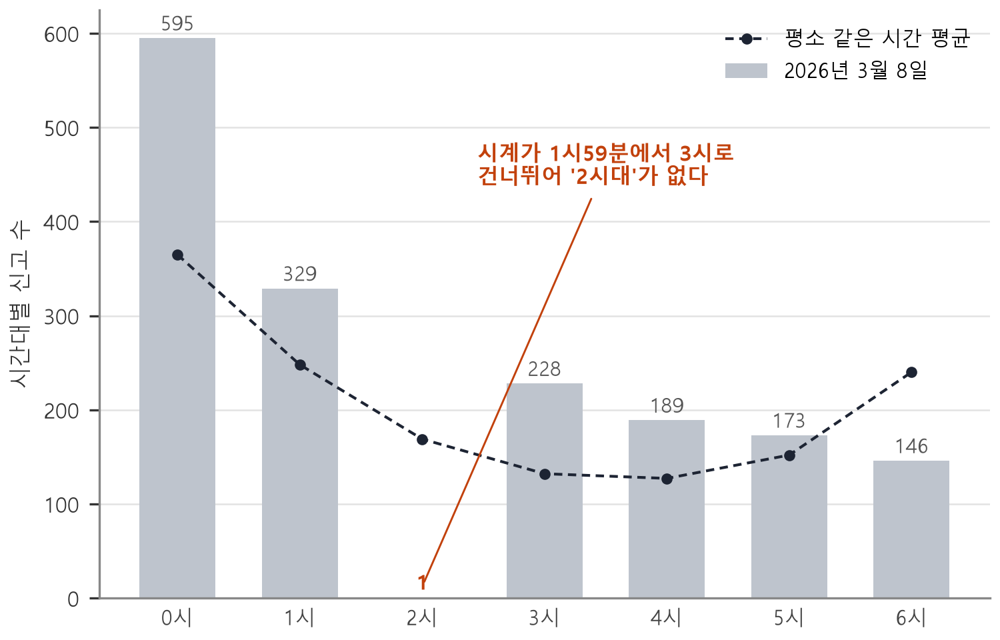
딱 1건. 시계가 2시를 건너뛰어 평소 169건이 사라졌다.
남은 1건은 시스템 기록 오류로 보입니다. 서머타임이 끝나는 가을 날(11월 1일)은 데이터가 끝난 뒤라 볼 수 없습니다.
Q016
이웃 소음 신고가 가장 많았던 날은?
2.3배
최다일/평균
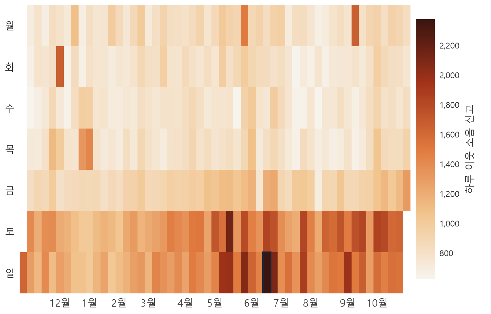
2026년 6월 21일, 2,375건으로 평소의 2.3배.
브롱크스 북부의 한 주소를 빼지 않으면 2025년 11~12월 날짜들이 상위를 휩쓸어 버립니다(8장에서 다시 봅니다). 6월 21일은 일요일이라 토요일 밤에서 이어진 새벽 신고가 들어 있습니다.
CHAPTER 3 · 질문 10개
03
날씨가 바꾸는 민원
기온과 눈보라가 어떤 민원은 몇 배로 키우고, 어떤 민원은 그대로 두는지 비교합니다.
이 장의 놀라운 숫자5.7배길거리 소음, 25도 이상인 날 ÷ 영하인 날
이 장의 날씨 비교는 브롱크스 북부의 한 주소를 빼고, 기록이 온전한 363일로 셌습니다. 배수는 모두 '영하인 날'과 비교했습니다.
Q017길거리 소음은 더운 날 몇 배로 늘까?
Q018이웃집 소음도 날씨를 탈까?
Q019소화전 물놀이 신고는 더운 날 몇 배?
Q020정전 신고는 언제 많을까?
Q021길에서 술 마신다는 신고, 여름엔 몇 배?
Q022노숙인 텐트 신고는 따뜻할 때 늘까?
Q0231년 눈 민원의 몇 %가 단 이틀에?
Q024눈 민원, 1인당 가장 많은 자치구는?
Q025나무가 가장 많이 쓰러진 날은?
Q026포트홀 신고가 가장 많은 달은?
Q017
길거리 소음은 더운 날 몇 배로 늘까?
5.7배
25도 이상 ÷ 영하
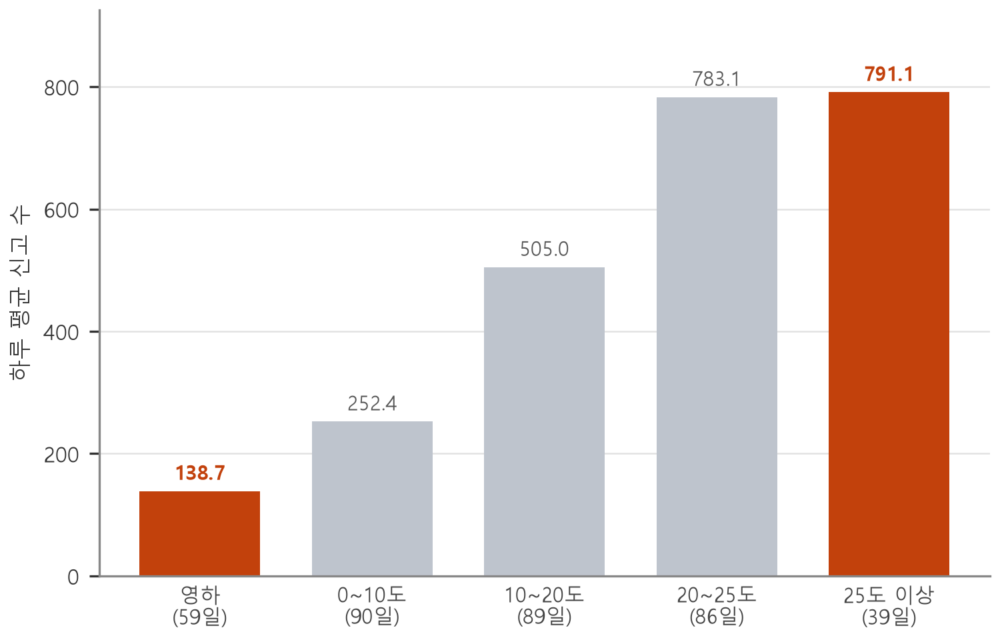
기온 25도 넘는 날이 영하인 날의 5.7배다.
Q018
이웃집 소음도 날씨를 탈까?
1.0배
25도 이상 ÷ 영하
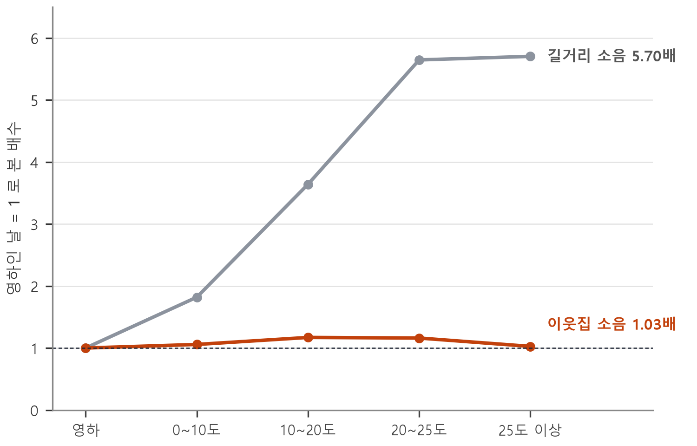
거의 안 탄다. 25도 넘는 날과 영하인 날의 차이가 1.03배뿐이다.
한 주소(8장)를 빼지 않으면 겨울 값이 크게 부풀어 '추울수록 많다'로 잘못 보입니다.
Q019
소화전 물놀이 신고는 더운 날 몇 배?
3.7배
25도 이상 ÷ 영하
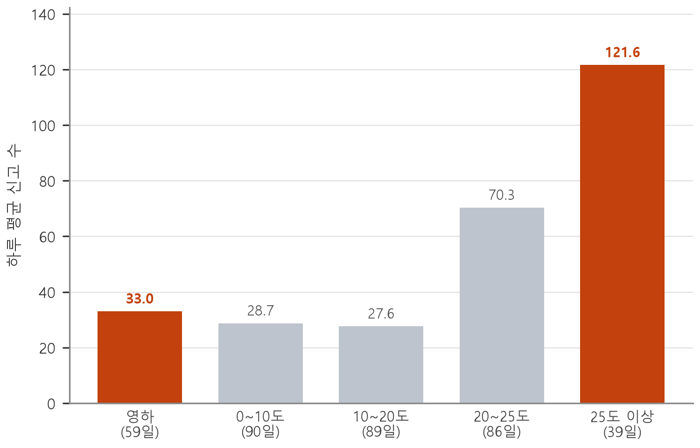
25도 넘는 날 하루 122건, 영하인 날의 3.7배.
겨울 값(하루 33건)에는 동파·고장 누수가 섞여 있습니다. 선선한 날(10~20도)과 비교하면 4.4배입니다.
Q020
정전 신고는 언제 많을까?
1.7배
영하 ÷ 20~25도
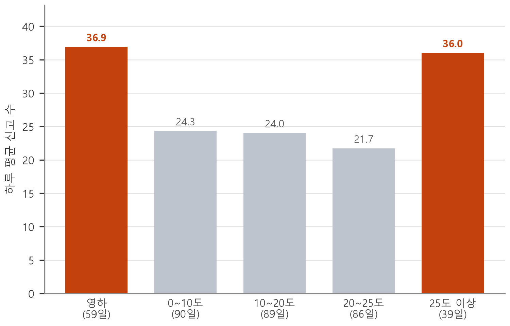
너무 춥거나 너무 더울 때. 양 끝이 중간의 1.7배.
정전은 양 끝이 함께 높은 U자라, 이 질문만 '영하 대비'가 아니라 가운데 구간(20~25도)과 비교했습니다.
Q021
길에서 술 마신다는 신고, 여름엔 몇 배?
4.5배
25도 이상 ÷ 영하
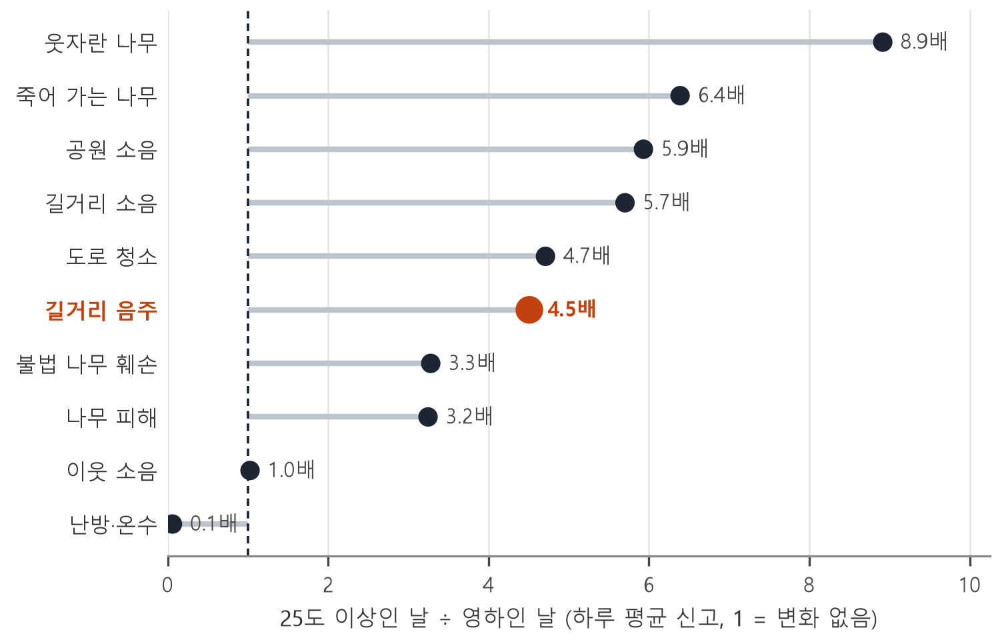
25도 넘는 날 하루 20건, 영하인 날의 4.5배. 길거리 소음 다음으로 더위를 탄다.
그림은 영하인 날에도 하루 4건 이상 들어오는 민원만 비교했습니다. 불꽃놀이처럼 한철 행사인 민원은 뺐습니다.
Q022
노숙인 텐트 신고는 따뜻할 때 늘까?
2.6배
25도 이상 ÷ 영하
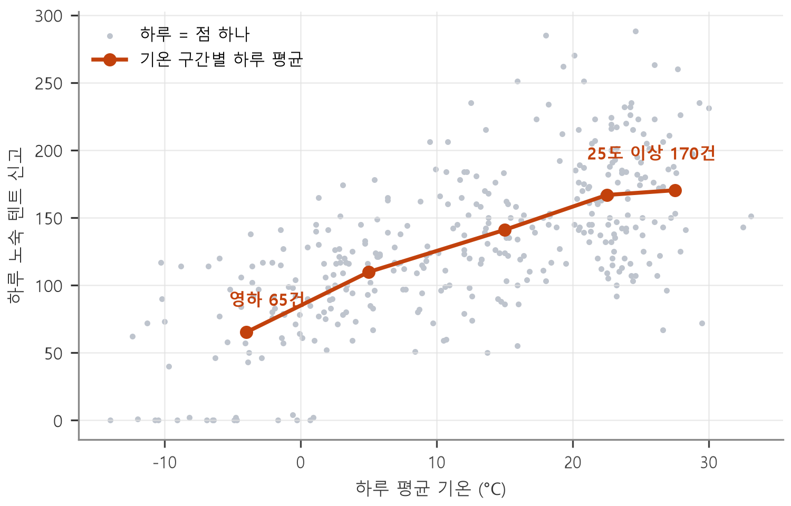
그렇다. 25도+ 날이 영하인 날의 2.6배.
Q023
1년 눈 민원의 몇 %가 단 이틀에?
28%
2월 23~24일 비중
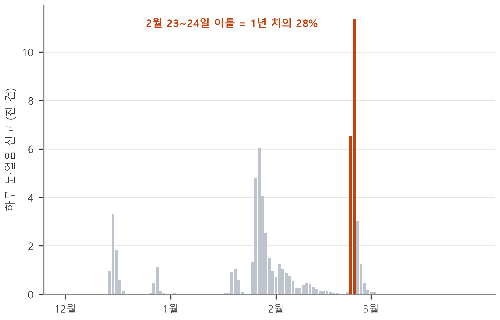
28%. 2월 23~24일 폭설 이틀에 1.8만 건이 몰렸다.
Q024
눈 민원, 1인당 가장 많은 자치구는?
11배
스태튼아일랜드 ÷ 맨해튼 (1인당)
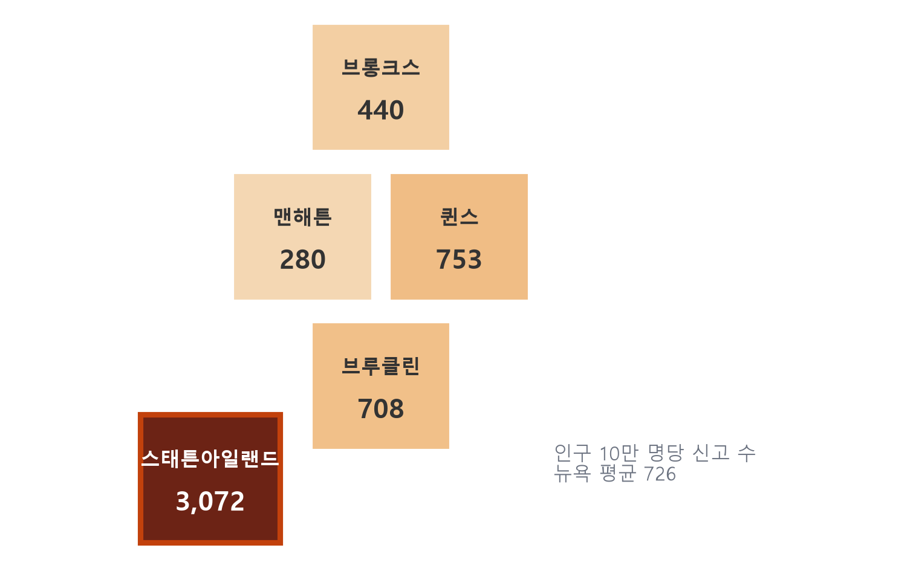
스태튼아일랜드. 10만 명당 3,072건으로, 가장 적은 맨해튼(280건)의 11배다.
Q025
나무가 가장 많이 쓰러진 날은?
12배
최다일 ÷ 평균
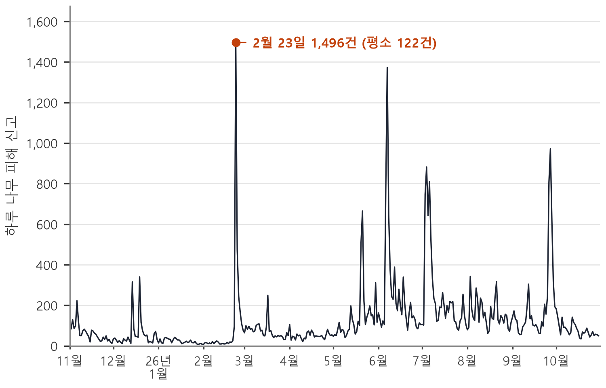
폭설 첫날 2월 23일. 하루 1,496건, 평소의 12배 나무가 꺾였다.
Q026
포트홀 신고가 가장 많은 달은?
3.6배
3월 ÷ 월평균
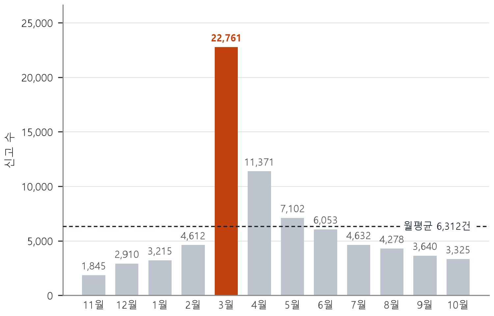
3월. 2만2,761건으로 한 달 평균의 3.6배다.
얼었다 녹기를 되풀이한 늦겨울 뒤에 도로가 한꺼번에 깨지는 것으로 보입니다.
CHAPTER 4 · 질문 8개
04
소음의 다른 얼굴들
밤 파티 소음 말고도 개, 헬기, 아이스크림 트럭, 공사장까지 소음에는 여러 얼굴이 있습니다.
이 장의 놀라운 숫자62배헬기 소음, 맨해튼 ÷ 브롱크스 (1인당)
이 장은 브롱크스 북부의 한 주소를 빼고 셌습니다. 이유는 8장에서 봅니다.
Q027이웃 소음, 음악과 '쿵쿵' 중 뭐가 많을까?
Q028개 짖는 소리 신고는 몇 시에 많을까?
Q029차 소음 1위는 경적일까, 음악일까?
Q030아이스크림 트럭 소음 신고는 언제?
Q031헬기 소음, 맨해튼은 브롱크스의 몇 배?
Q032헬기 소음 신고 절반이 한 동네에서?
Q033공사 소음 신고 1위 사유는?
Q034주말에 가장 몰리는 소음은?
Q027
이웃 소음, 음악과 '쿵쿵' 중 뭐가 많을까?
50%
음악·파티 비중
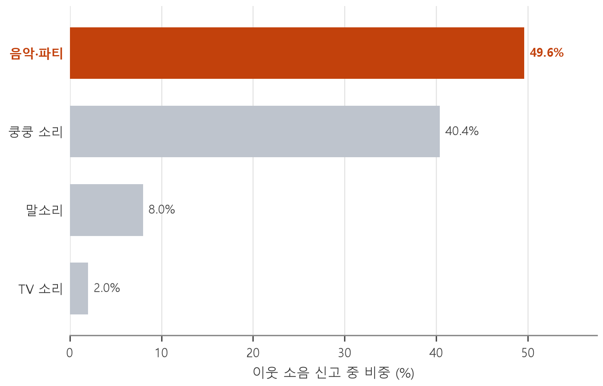
음악·파티 50%, 쿵쿵 소리 40%. 말소리는 8%뿐.
한 주소(8장)를 넣으면 음악·파티 비중이 55%로 달라집니다.
Q028
개 짖는 소리 신고는 몇 시에 많을까?
오전 9시
개 짖음 피크
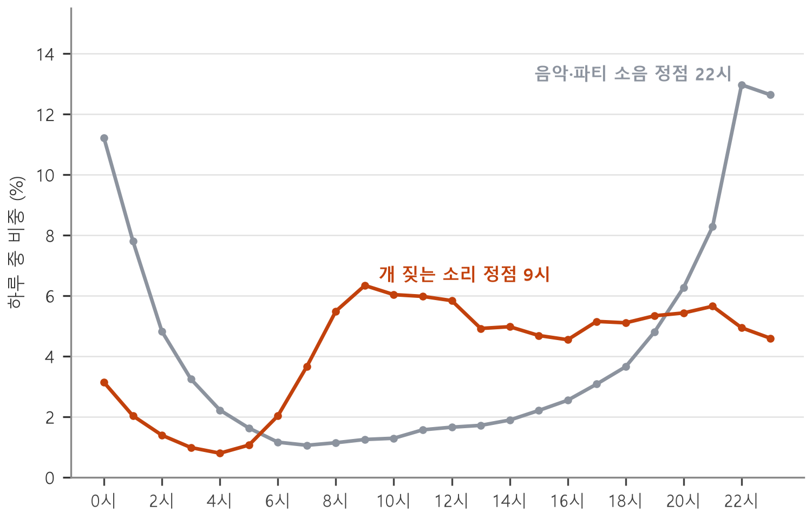
오전 9시가 정점. 밤 10시에 몰리는 파티 소음과 달리 낮 민원이다.
Q029
차 소음 1위는 경적일까, 음악일까?
42%
차량 음악 비중
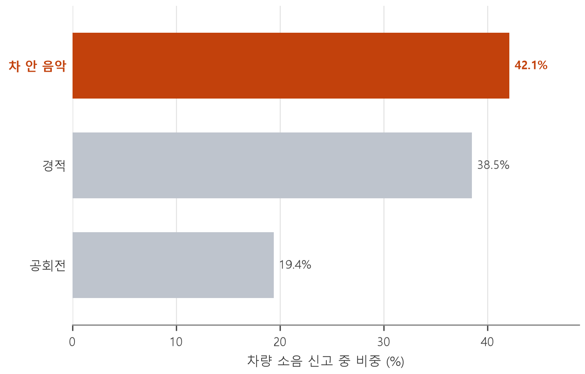
차 안 음악이 42%로 경적(39%)보다 많다.
Q030
아이스크림 트럭 소음 신고는 언제?
99%
3~10월 비중
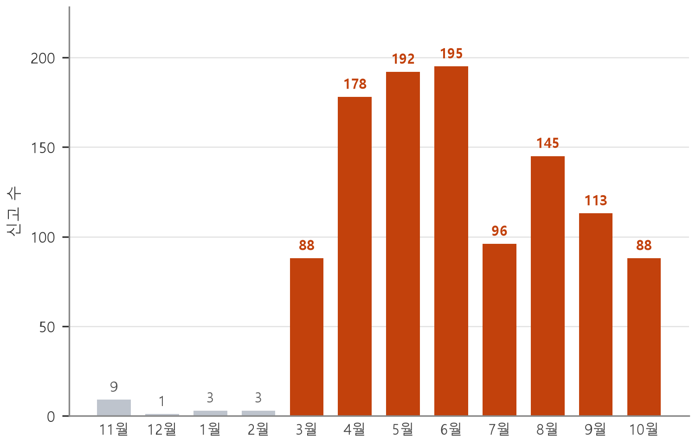
3~10월에 99%. 6월이 가장 많고 저녁 8시가 피크.
Q031
헬기 소음, 맨해튼은 브롱크스의 몇 배?
62배
맨해튼 ÷ 브롱크스 (1인당)
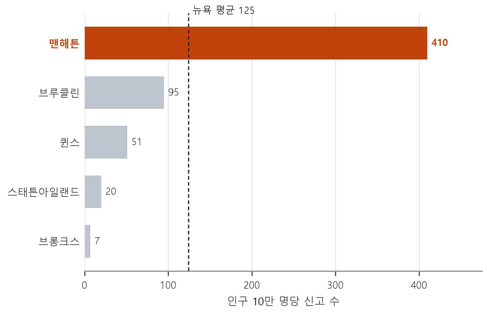
62배. 맨해튼 하늘의 헬기 소리가 압도적이다.
소수 주소의 반복 신고 영향이 큽니다. 상위 10개 주소가 38%를 냅니다(Q073).
Q032
헬기 소음 신고 절반이 한 동네에서?
44%
맨해튼 7번 커뮤니티보드 비중
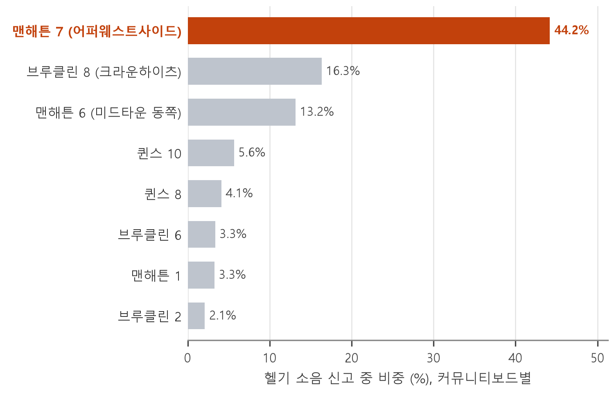
44%가 맨해튼 어퍼웨스트사이드(7번 커뮤니티보드).
Q033
공사 소음 신고 1위 사유는?
25%
시간 외 공사 비중
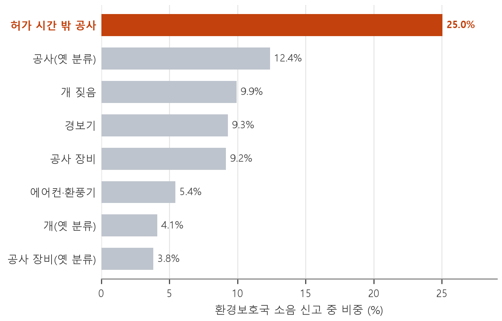
허가 시간 밖 공사가 25%로 1위다.
'공사(옛 분류)' 7,575건은 다른 분류 체계로 들어온 일반 공사 소음이라 따로 셌습니다.
Q034
주말에 가장 몰리는 소음은?
50%
공원 소음 주말 비중
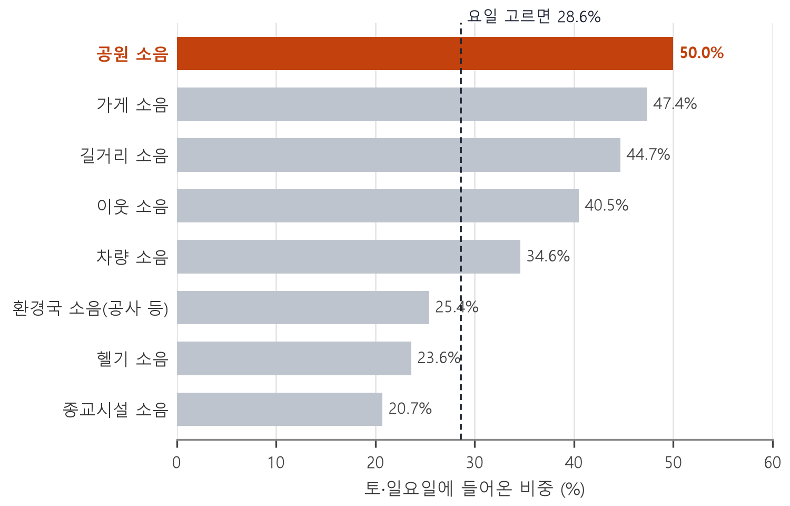
공원 소음. 절반(50%)이 토·일에 들어온다.
요일이 고르게 퍼져 있다면 토·일요일 몫은 7일 중 2일, 28.6%입니다.
CHAPTER 5 · 질문 12개
05
동물의 도시
쥐와 비둘기부터 너구리, 사슴, 수탉까지 뉴욕 신고 장부에 등장하는 동물들입니다.
이 장의 놀라운 숫자79%사슴 사체 신고 중 스태튼아일랜드 몫
Q035죽은 동물 신고 1위는 어떤 동물?
Q036너구리 사체 신고, 어디서 가장 많을까?
Q037뉴욕에 사슴이? 사체 신고는 어디서?
Q038몰래 키우다 신고된 동물 1위는?
Q039팔면 안 되는 동물 신고 1위는?
Q040쥐 목격 신고, 인구 대비 1위 자치구는?
Q041쥐는 여름에 몇 배 더 눈에 띌까?
Q042모기 신고가 몰리는 달은?
Q043벌·말벌 신고는 언제 가장 많을까?
Q044비둘기 배설물 신고, 맨해튼은 몇 배?
Q045동물 학대 신고, 가장 흔한 유형은?
Q046공원 동물 신고 1위는?
Q035
죽은 동물 신고 1위는 어떤 동물?
38%
고양이 비중
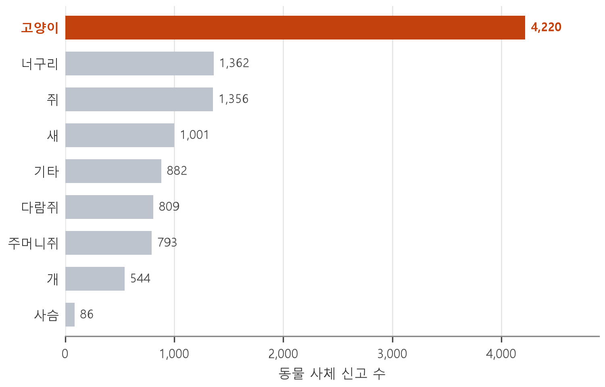
고양이. 동물 사체 신고의 38%를 차지한다.
Q036
너구리 사체 신고, 어디서 가장 많을까?
23배
스태튼아일랜드 ÷ 맨해튼 (1인당)
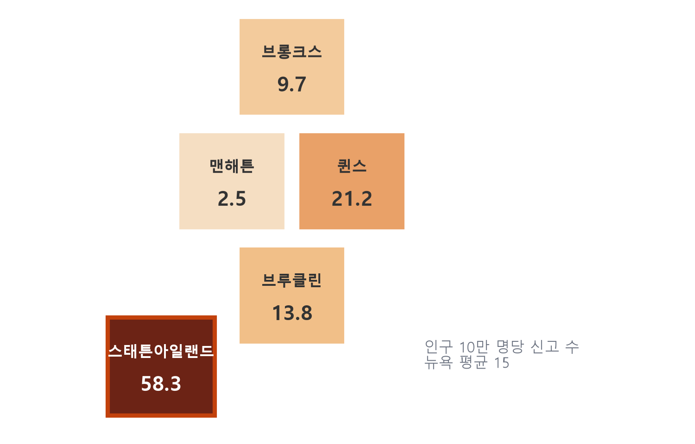
스태튼아일랜드. 길에서 발견되는 너구리가 1인당 맨해튼의 23배다.
Q037
뉴욕에 사슴이? 사체 신고는 어디서?
79%
스태튼아일랜드 비중
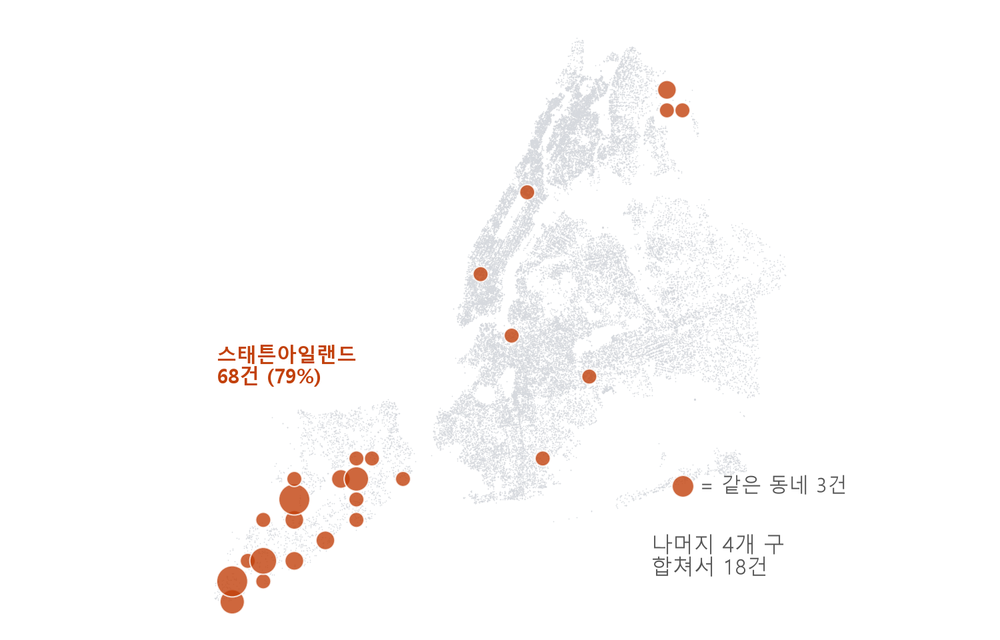
86건 중 79%가 스태튼아일랜드에서 나왔다.
Q038
몰래 키우다 신고된 동물 1위는?
61%
수탉 비중
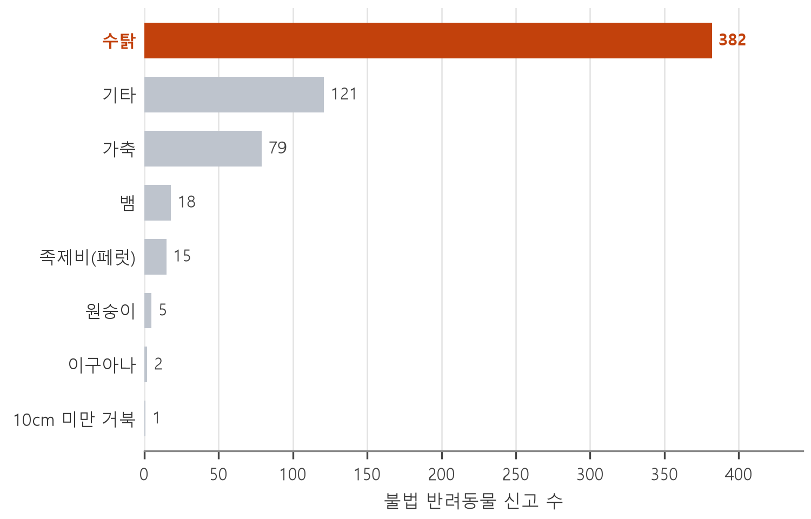
수탉. 불법 반려동물 신고의 61%다.
Q039
팔면 안 되는 동물 신고 1위는?
61%
작은 거북 비중
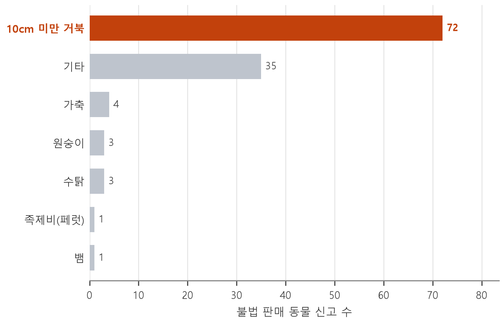
등딱지 4인치(10cm) 미만 새끼 거북이 61%.
등딱지 10cm 미만 거북은 살모넬라균 위험 때문에 판매가 금지돼 있습니다.
Q040
쥐 목격 신고, 인구 대비 1위 자치구는?
2.3배
맨해튼 ÷ 스태튼아일랜드 (1인당)
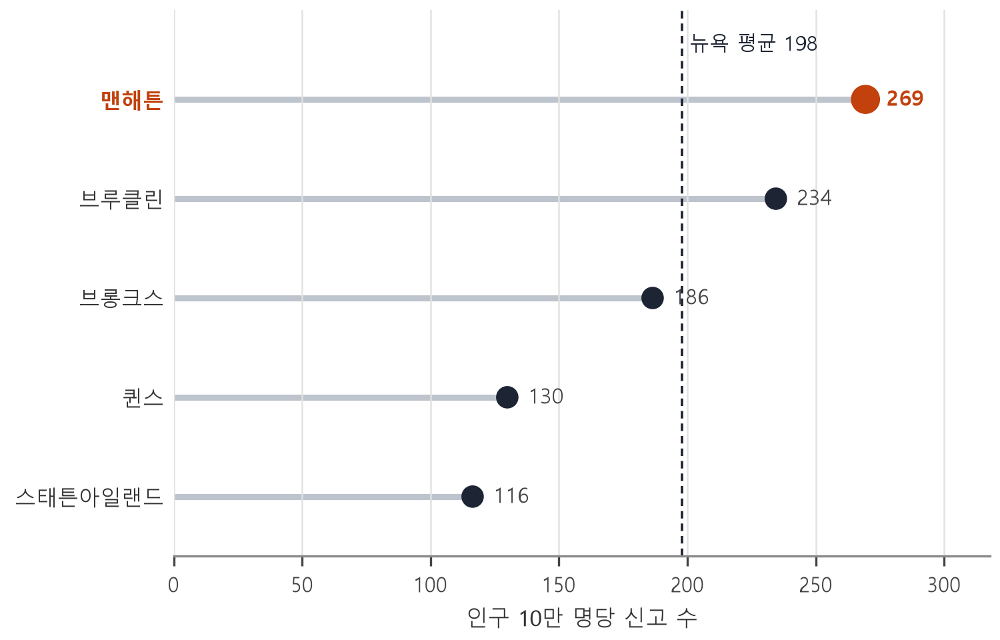
맨해튼. 10만 명당 269건으로 스태튼아일랜드의 2.3배.
Q041
쥐는 여름에 몇 배 더 눈에 띌까?
2.7배
8월 ÷ 12월
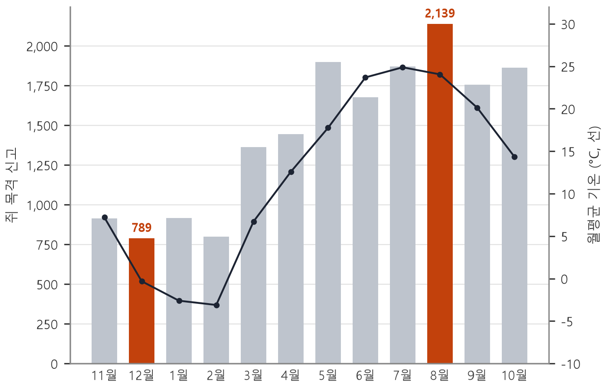
8월 목격 신고가 12월의 2.7배다.
Q042
모기 신고가 몰리는 달은?
64%
8~9월 비중
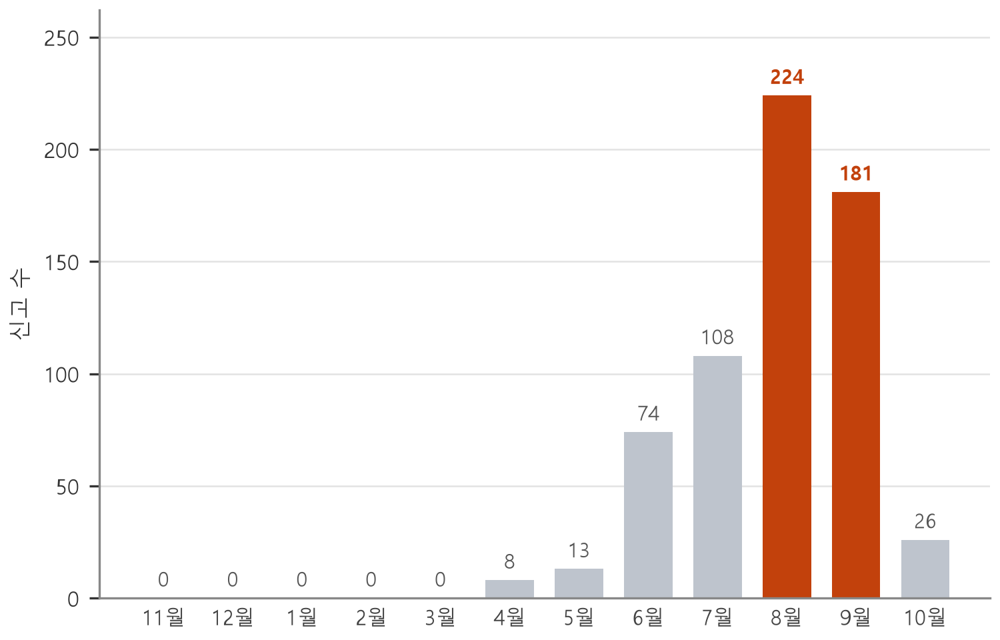
8~9월에 64%. 겨울엔 0건이다.
Q043
벌·말벌 신고는 언제 가장 많을까?
9월
벌 신고 최다월
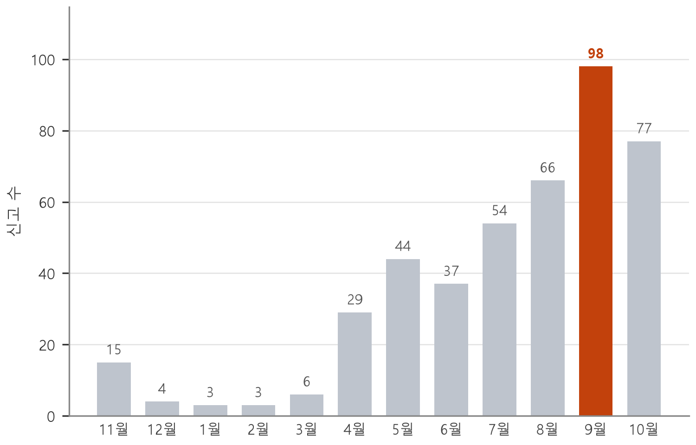
한여름이 아니라 9월. 1년 치의 22.5%.
Q044
비둘기 배설물 신고, 맨해튼은 몇 배?
6.5배
맨해튼 ÷ 브롱크스 (1인당)
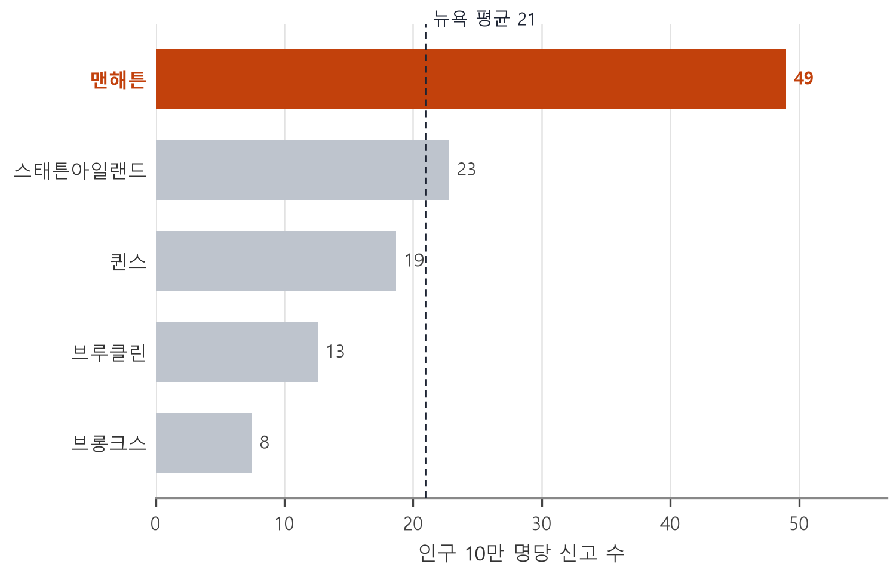
비둘기 배설물 신고, 맨해튼은 1인당 브롱크스의 6.5배다.
Q045
동물 학대 신고, 가장 흔한 유형은?
49%
방치 비중
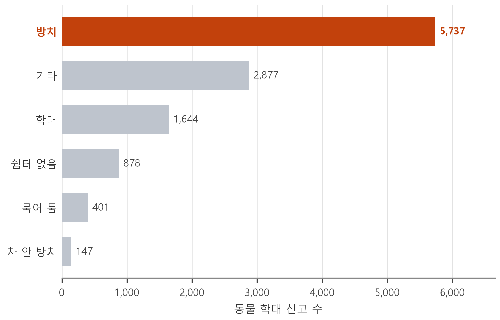
'방치'가 49%로 절반. 차 안 방치는 147건.
Q046
공원 동물 신고 1위는?
53%
목줄 없는 개 비중
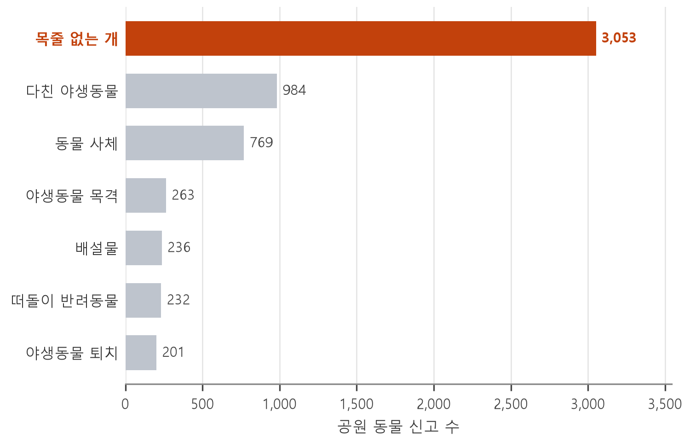
목줄 없는 개. 공원 동물 신고의 53%다.
CHAPTER 6 · 질문 9개
06
도로 위의 신경전
주차, 차고 앞, 버려진 차와 자전거, 포트홀까지 길 위에서 벌어지는 다툼입니다.
이 장의 놀라운 숫자12배차고 앞 막힘, 퀸스 ÷ 맨해튼 (1인당)
자치구는 인구 10만 명당 건수로 비교하고, '몇 배'는 가장 낮은 구와 견줬습니다.
Q047불법주차 신고 1위 사유는?
Q048'차고 앞 막힘' 신고, 퀸스는 몇 배?
Q049버려진 차 신고, 어디서 가장 많을까?
Q050자전거도로 막는 주차, 어디서 신고될까?
Q051가로등 꺼짐 신고, 1인당 1위는?
Q052버려진 자전거 신고, 브루클린은 몇 배?
Q053전동킥보드 신고는 어디서 나올까?
Q054고장 난 주차 미터 신고, 맨해튼 몫은?
Q055불법주차 신고가 가장 많은 시각은?
Q047
불법주차 신고 1위 사유는?
28%
소화전 앞 비중
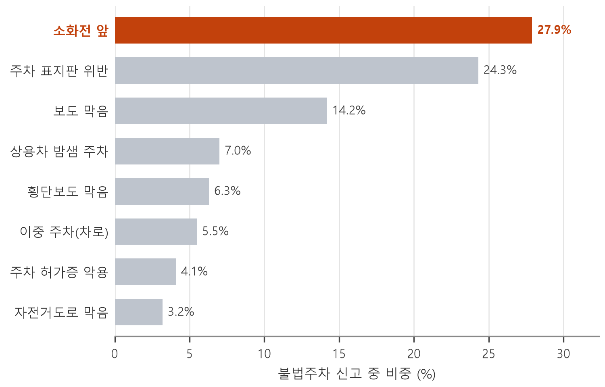
소화전 앞 주차가 28%로 1위, 표지판 위반이 24%.
Q048
'차고 앞 막힘' 신고, 퀸스는 몇 배?
12배
퀸스 ÷ 맨해튼 (1인당)
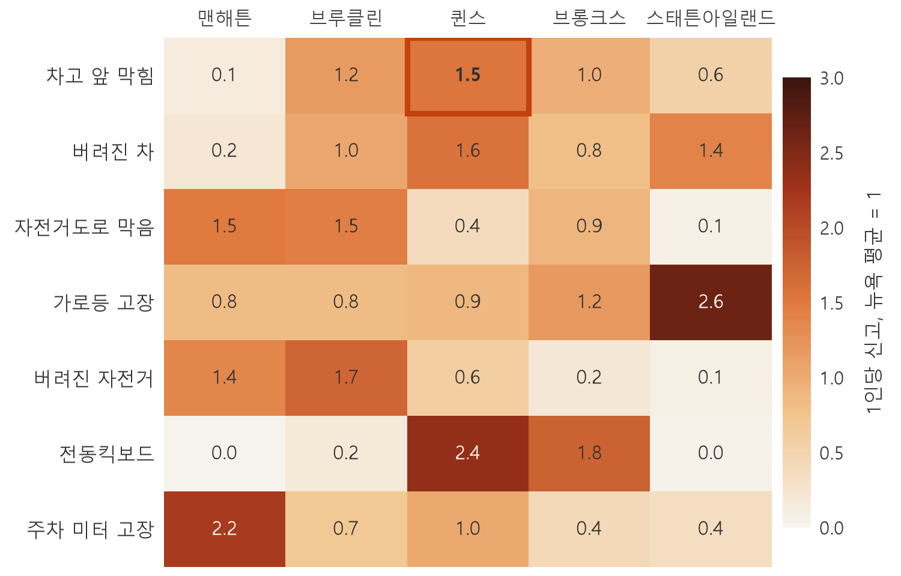
퀸스. 1인당 맨해튼의 12배. 차고 딸린 집이 많은 곳에서 신고가 나온다.
그림은 6장의 도로 민원 7종을 한 장에 모은 것입니다. 칸의 숫자는 각 민원의 뉴욕 평균을 1로 놓은 1인당 배수입니다.
Q049
버려진 차 신고, 어디서 가장 많을까?
7.8배
퀸스 ÷ 맨해튼 (1인당)
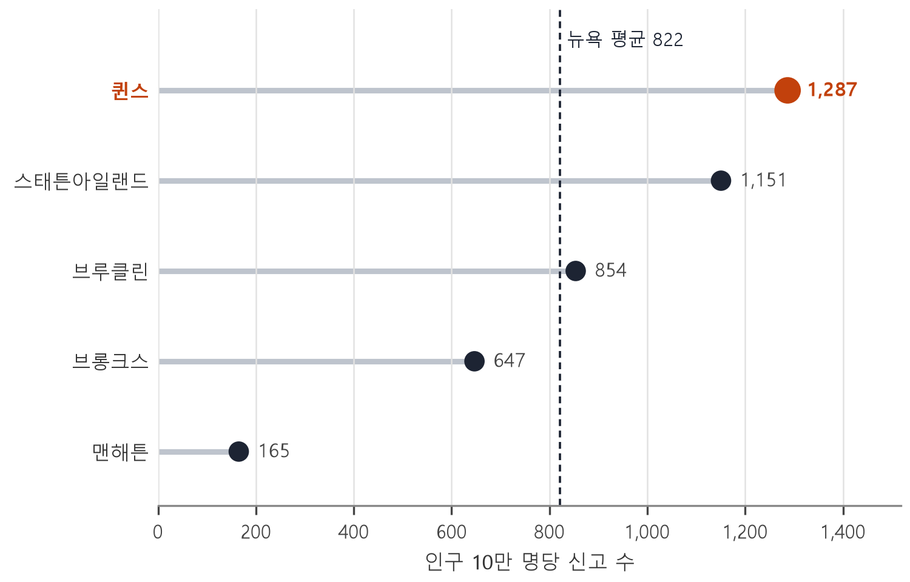
퀸스. 10만 명당 1,287건, 맨해튼의 7.8배다.
Q050
자전거도로 막는 주차, 어디서 신고될까?
24배
맨해튼 ÷ 스태튼아일랜드 (1인당)
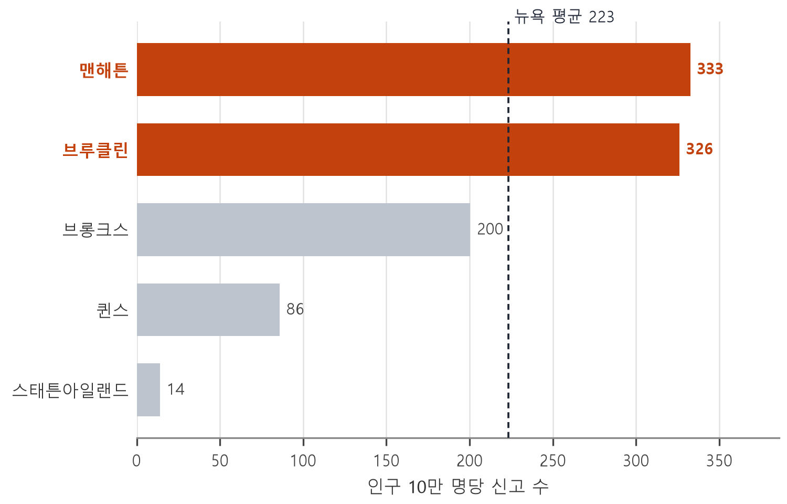
맨해튼·브루클린. 1인당 가장 적은 스태튼아일랜드의 24배, 퀸스의 3.9배다.
Q051
가로등 꺼짐 신고, 1인당 1위는?
3.2배
스태튼아일랜드 ÷ 브루클린 (1인당)
스태튼아일랜드. 가장 적은 브루클린의 3.2배, 밤길이 어두운 곳이 많다는 뜻으로 보인다.
Q052
버려진 자전거 신고, 브루클린은 몇 배?
8.7배
브루클린 ÷ 브롱크스 (1인당)
인구 대비 브롱크스의 8.7배다.
1인당 가장 적은 곳은 스태튼아일랜드지만 1년에 9건뿐이라 비교가 불안정해, 그다음으로 적은 브롱크스와 비교했습니다.
Q053
전동킥보드 신고는 어디서 나올까?
94%
퀸스+브롱크스 비중
94%가 퀸스·브롱크스. 맨해튼은 2건뿐.
공유 전동킥보드가 퀸스·브롱크스 일부 지역에서만 운영되기 때문으로 보입니다(데이터 밖의 사실).
Q054
고장 난 주차 미터 신고, 맨해튼 몫은?
42%
맨해튼 비중
42%. 1인당으로는 가장 적은 스태튼아일랜드의 6.1배다.
Q055
불법주차 신고가 가장 많은 시각은?
4.9배
오전 8시 ÷ 새벽 3시
오전 8시. 가장 적은 새벽 3시의 4.9배.
CHAPTER 7 · 질문 9개
07
집이 아프다
집주인에게 고쳐 달라고 할 일을 시 주택국(HPD)에 신고한 기록으로 본 뉴욕의 집입니다.
이 장의 놀라운 숫자27%검사관이 집에 들어가지 못한 주택 민원
Q056집 수리 민원, 브롱크스는 몇 배?
Q057집 안 위생 민원 1위는 해충? 곰팡이?
Q058집 안 해충 신고, 8월은 2월의 몇 배?
Q059난방 민원 상위 1% 건물의 몫은?
Q060한 건물 난방 민원 최다 기록은?
Q061엘리베이터 고장 신고, 1인당 1위는?
Q062고장 신고 1위 가전은?
Q063집 수리 민원, 검사관이 못 들어간 비율?
Q064난방 민원에 위반 딱지가 붙는 비율은?
Q056
집 수리 민원, 브롱크스는 몇 배?
7.4배
브롱크스 ÷ 스태튼아일랜드 (1인당)
브롱크스. 10만 명당 2만 건이 넘는다. 스태튼아일랜드의 7.4배.
주택 수리 민원은 세입자가 내므로 자치구마다 임대주택이 얼마나 많은지가 크게 반영됩니다.
Q057
집 안 위생 민원 1위는 해충? 곰팡이?
53%
해충 비중
해충이 53%, 곰팡이가 29%다.
Q058
집 안 해충 신고, 8월은 2월의 몇 배?
1.7배
8월 ÷ 2월
1.7배. 8~10월이 가장 많다.
Q059
난방 민원 상위 1% 건물의 몫은?
23%
상위 1% 건물 비중
426개 건물(1%)이 난방 민원의 23%를 낸다.
같은 건물의 여러 세대가 같은 날 신고한 경우도 각각 센 '신고 수' 기준입니다.
Q060
한 건물 난방 민원 최다 기록은?
2,211건
한 건물 1년 난방 민원
브롱크스 북부의 한 건물. 1년에 2,211건, 138일 동안 신고가 들어왔다.
개인 거주지일 수 있어 1위 건물은 동네만 적었습니다.
Q061
엘리베이터 고장 신고, 1인당 1위는?
14배
브롱크스 ÷ 스태튼아일랜드 (1인당)
브롱크스. 1인당 스태튼아일랜드의 14배, 퀸스와 비교해도 4.5배다.
스태튼아일랜드는 엘리베이터가 있는 고층 건물이 적은 것으로 보입니다.
Q062
고장 신고 1위 가전은?
61%
레인지 비중
가스·전기레인지 61%, 냉장고 39%. 전자레인지는 15건.
Q063
집 수리 민원, 검사관이 못 들어간 비율?
27%
검사 불발 비율
27%. 4건 중 1건은 문 앞에서 돌아섰다.
그림은 1년에 1만 건 넘게 들어온 주택 민원 중 많은 10종입니다.
Q064
난방 민원에 위반 딱지가 붙는 비율은?
4%
난방 위반 발부율
4%뿐. 페인트·바닥 민원은 26%다.
난방 민원의 30.7%는 '이미 다른 세입자가 신고한 건'으로 닫힙니다(Q088). 그림은 많은 10종입니다.
CHAPTER 8 · 질문 11개
08
한 주소가 바꾼 통계
어떤 주소는 1년에 수만 건을 신고합니다. 몇몇 '프로 신고러'가 통계를 얼마나 흔드는지 봅니다.
이 장의 놀라운 숫자4만7,105건한 주소가 1년에 낸 신고
개인 거주지일 수 있는 주소는 동네만 적고, 기관(종교시설·공항 등)은 거리 이름까지 적었습니다.
Q065한 주소가 1년에 낸 최다 신고는?
Q066그 주소 하나가 뉴욕 이웃 소음의 몇 %?
Q067브롱크스 12월 이웃 소음, 그 주소를 빼면?
Q068가장 바쁜 날, 그 주소는 몇 초마다?
Q069그 신고들에 경찰은 뭐라 답했나?
Q0701년 내내 하루도 안 쉬고 신고한 곳은?
Q071불법주차를 가장 많이 신고한 주소는?
Q072종교시설 소음 신고, 한 곳이 몇 %?
Q073헬기 소음 신고, 10개 주소의 몫은?
Q074상위 1% 주소가 내는 신고는 몇 %?
Q075같은 날 같은 곳 같은 민원, 몇 % 반복?
Q065
한 주소가 1년에 낸 최다 신고는?
4만7,105건
한 주소 1년 신고
브롱크스 북부의 한 주소. 1년에 4만7,105건, 뉴욕 전체 신고의 1.2%다.
개인 거주지일 수 있어 동네만 적었습니다. 이 주소의 신고는 거의 전부(4만7,013건)가 이웃 소음입니다.
Q066
그 주소 하나가 뉴욕 이웃 소음의 몇 %?
11%
뉴욕 이웃 소음 중 비중
뉴욕 전체의 11%, 브롱크스의 3분의 1이다.
Q067
브롱크스 12월 이웃 소음, 그 주소를 빼면?
4.0배
그 주소 포함 ÷ 제외
3만7,472건이 9,316건으로. 통계가 4배 부풀었다.
Q068
가장 바쁜 날, 그 주소는 몇 초마다?
40초
신고 간격(중앙값)
2025년 11월 30일 하루 2,195건, 약 40초에 한 번꼴. 24시간 내내 쉬지 않았다.
이 주소의 1년 치 신고 90%가 11월 7일~12월 16일, 약 6주 사이에 몰려 있습니다.
Q069
그 신고들에 경찰은 뭐라 답했나?
63%
'흔적 없음' 비율
63%가 '가 보니 흔적 없음'. 소환장(딱지)은 4만7천 건 중 10건뿐이었다.
이 주소 신고의 99.8%는 앱으로 들어왔습니다.
Q070
1년 내내 하루도 안 쉬고 신고한 곳은?
364일
신고한 날 수
브루클린 남부의 한 주소. 데이터 속 365일 중 364일 신고했다, 하루 24건꼴.
개인 거주지일 수 있어 동네만 적었습니다. 이 주소 신고의 99.8%가 이웃 소음입니다.
Q071
불법주차를 가장 많이 신고한 주소는?
7,604건
한 주소 주차 신고
퀸스 서부의 한 주소. 7,604건, 신고한 날마다 22건꼴이다.
개인 주소일 수 있어 동네만 적었습니다. 96.5%가 '보도를 막은 차' 신고입니다.
Q072
종교시설 소음 신고, 한 곳이 몇 %?
62%
1위 주소 비중
62%가 퀸스 파슨스 대로의 한 주소에서 나왔다.
번지는 적지 않았습니다.
Q073
헬기 소음 신고, 10개 주소의 몫은?
38%
상위 10개 주소 비중
주소 1,997곳 중 상위 10곳이 38%를 낸다.
Q074
상위 1% 주소가 내는 신고는 몇 %?
30%
상위 1% 주소 비중
30%. 주소 100곳 중 1곳이 신고 3건 중 1건을 낸다.
주소 칸에 거리 이름만 적힌 경우(예: 'BROADWAY')도 한 곳으로 세었기 때문에 '주소'는 근사치입니다.
Q075
같은 날 같은 곳 같은 민원, 몇 % 반복?
24%
반복 신고 묶음에 든 비율
신고 4건 중 1건(24%)은 같은 날 반복 신고였다.
CHAPTER 9 · 질문 10개
09
경찰이 도착했을 때
경찰(NYPD)이 출동한 뒤 남긴 결과 문장을 분류해, 신고가 실제로 어떻게 끝나는지 봅니다.
이 장의 놀라운 숫자0.4%이웃 소음 신고에 딱지가 나온 비율
이 장은 브롱크스 북부의 한 주소를 빼고 셌습니다. 경찰이 남긴 결과 문장을 읽어 하나씩 분류했습니다.
Q076경찰 출동, '흔적 없음'으로 끝난 비율은?
Q077이웃 소음 신고에 딱지가 나올 확률은?
Q078경찰 신고 중 딱지 확률 1위는?
Q079불꽃놀이 신고, 경찰이 가 보면?
Q080경찰 신고가 체포로 끝난 건 몇 건?
Q081이웃 소음, 문을 안 열어줘 끝난 비율?
Q082노숙인 텐트 신고, 실제로 텐트가 있었나?
Q083소음 현장 정리, 몇 시 출동이 잘될까?
Q084불법주차 딱지 확률, 자치구마다 다를까?
Q085경찰이 가장 빨리 닫는 신고는?
Q076
경찰 출동, '흔적 없음'으로 끝난 비율은?
41%
흔적 없음 비율
41%. 가장 흔한 결말은 '도착하니 아무것도 없었다'.
브롱크스 북부의 한 주소(8장)는 빼고 셌습니다.
Q077
이웃 소음 신고에 딱지가 나올 확률은?
0.4%
이웃 소음 소환장 발부율
0.4%. 250건에 1건꼴이다.
Q078
경찰 신고 중 딱지 확률 1위는?
33%
차고 앞 막힘 발부율
차고 앞 막힘. 3건 중 1건(33%)에 딱지가 나온다.
Q079
불꽃놀이 신고, 경찰이 가 보면?
73%
흔적 없음 비율
경찰이 가 보면 73%는 이미 끝나 있었다.
Q080
경찰 신고가 체포로 끝난 건 몇 건?
1,163건
1,400건에 1건
1,163건, 0.07%. 체포로 끝난 신고는 길거리 소음이 가장 많았다.
Q081
이웃 소음, 문을 안 열어줘 끝난 비율?
13%
진입 불가 비율
13%. 8건 중 1건은 경찰이 들어가지 못했다.
Q082
노숙인 텐트 신고, 실제로 텐트가 있었나?
36%
텐트 발견 비율
36%만 텐트를 확인했다. 46%는 가 보니 텐트가 없었다.
노숙 텐트 신고는 공원국 등 다른 기관도 받기 때문에, 여기서는 경찰이 받은 것만 셌습니다.
Q083
소음 현장 정리, 몇 시 출동이 잘될까?
40%
20시 '정리' 비율
저녁 8시 신고는 40%가 정리, 새벽 6시는 22%.
Q084
불법주차 딱지 확률, 자치구마다 다를까?
1.5배
브롱크스 ÷ 스태튼아일랜드
브롱크스 28%, 스태튼아일랜드 19%. 1.5배 차이.
Q085
경찰이 가장 빨리 닫는 신고는?
40분
교통 민원 중앙값
교통 민원. 접수부터 종료까지 중앙값 40분.
실제 처리 시각이 없는 기록 11.9만 건은 뺐습니다. 경찰 민원끼리만 비교했습니다.
CHAPTER 10 · 질문 8개
10
답변서에 숨은 이야기
다른 기관들이 남긴 처리 결과 문장과 처리 상태에서 '가 보니 없었다', '이미 접수됨' 같은 이야기를 찾습니다.
이 장의 놀라운 숫자48%노숙인 지원팀이 가 보니 사람이 없던 비율
Q086'가 보니 없었다' 답이 가장 많은 기관은?
Q087노숙인 지원팀의 도움, 거절 비율은?
Q088'이미 접수됨' 답이 가장 많은 민원은?
Q089공원국 나무 민원, '1년 넘게 걸릴 수도'는?
Q090흐르는 소화전, 몇 번이나 잠갔을까?
Q091끝난 민원, 1시간 안에 끝난 비율은?
Q092한 건도 '종료'되지 않은 민원은?
Q093건물국이 두 번 가도 못 들어간 비율?
Q086
'가 보니 없었다' 답이 가장 많은 기관은?
48%
DHS '못 찾음' 비율
노숙인서비스국(DHS) 48%, 경찰 42%.
'찾지 못함', '증거 없음', '이미 가고 없음' 같은 문장이 들어 있는 답변을 셌습니다.
Q087
노숙인 지원팀의 도움, 거절 비율은?
14%
도움 거절 비율
14%. 지원팀이 도움을 제안해도 받지 않거나 거부했다.
'도움을 받지 않음'(11.1%)과 '서비스를 거부함'(2.6%)을 합친 값입니다. 절반 가까이(48%)는 가 보니 사람을 찾지 못했습니다.
Q088
'이미 접수됨' 답이 가장 많은 민원은?
34%
쥐 신고 중복 비율
쥐 신고. 3건 중 1건(34%)이 중복 처리.
Q089
공원국 나무 민원, '1년 넘게 걸릴 수도'는?
1만2,759건
'1년 이상' 답변 수
1만2,759건이 '1년 이상 걸릴 수 있다'는 답을 받았다.
공원국 답변 전체의 9.2%입니다.
Q090
흐르는 소화전, 몇 번이나 잠갔을까?
2만186번
소화전 잠금 횟수
1년에 2만 번 넘게(2만186번). 83%가 6~8월이다.
Q091
끝난 민원, 1시간 안에 끝난 비율은?
22%
1시간 내 종료
22%. 반면 한 달 넘게 걸린 것도 5%.
실제 처리 시각이 없는 기록 11.9만 건은 뺐습니다.
Q092
한 건도 '종료'되지 않은 민원은?
0건
종료된 헬기 민원
헬기 소음. 1만971건 모두 아직 '처리 중'.
공사 납 먼지 민원(1,316건)도 100% 미종료입니다. 둘 다 접수만 해 두는 기록용으로 쓰이는 것으로 보입니다.
Q093
건물국이 두 번 가도 못 들어간 비율?
11%
2회 진입 실패
11%. 1만2,472건이 두 번 헛걸음했다.
CHAPTER 11 · 질문 3개
11
전화·웹·앱
같은 불편이라도 어떤 건 앱으로, 어떤 건 전화로 신고됩니다.
이 장의 놀라운 숫자91%구걸 신고 중 앱으로 들어온 몫
이 장은 브롱크스 북부의 한 주소를 빼고 셌습니다.
Q094311 신고, 어떤 방법이 가장 많을까?
Q095앱으로 가장 많이 신고되는 민원은?
Q096전화 신고 비율이 가장 높은 자치구는?
Q094
311 신고, 어떤 방법이 가장 많을까?
54%
온라인 비중
웹(온라인) 54%, 전화 25%, 앱 21%.
브롱크스 북부의 한 주소(8장)는 빼고 셌습니다. 이 주소를 넣으면 앱 비중이 22.4%로 올라갑니다.
Q095
앱으로 가장 많이 신고되는 민원은?
91%
구걸 앱 비중
구걸(팬핸들링). 91%가 앱으로 들어온다.
헬기·불꽃놀이처럼 앱에 메뉴가 없는 민원은 앱 비율이 0%입니다. 방치 차량은 100% 전화로 기록돼 있어 그림에서 뺐습니다.
Q096
전화 신고 비율이 가장 높은 자치구는?
30%
스태튼아일랜드 전화 비중
스태튼아일랜드 30%. 앱 비율은 12%로 꼴찌.
CHAPTER 12 · 질문 4개
12
이런 것도 신고해?
칭찬, 분실물, 견인차, 1년에 단 한 건뿐인 민원까지 311의 별난 구석입니다.
이 장의 놀라운 숫자93 : 1택시 불만 대 칭찬
Q097택시 불만과 칭찬, 비율은?
Q098311에 신고된 분실물 1위는?
Q099가게 불만 신고 1위 업종은?
Q1001년에 10건 이하로 들어온 민원은?
Q097
택시 불만과 칭찬, 비율은?
93:1
불만 : 칭찬
불만 93건에 칭찬 1건. 칭찬은 1년에 113건.
Q098
311에 신고된 분실물 1위는?
49%
가방·지갑 비중
가방·지갑이 49%. 그리고 98%가 택시에서 잃어버린 물건이다.
Q099
가게 불만 신고 1위 업종은?
11%
견인차 비중
견인차 회사. 소비자 민원의 11%로 1위.
Q100
1년에 10건 이하로 들어온 민원은?
17종
10건 이하 민원 종류
17종. 비둘기 포획 신고는 1년에 딱 1건.
그림에는 10건 이하 민원 일부와 그보다 조금 많은 별난 민원(방사성 물질 15건, 인명구조원 30건, 공중화장실 66건)을 함께 놓았습니다.
맺음말
질문 100개를 지나고 나면 311은 '불만 접수 창구'라기보다 도시가 매일 남기는 일기처럼 보입니다. 백 개의 답을 다섯 줄로 줄이면 이렇습니다.
달력과 날씨가 민원을 움직인다. 7월 4일 불꽃놀이 신고는 평소의 75배, 폭설 이틀에 눈 민원 1년 치의 28%가 몰렸습니다. 반면 이웃집 소음은 기온을 거의 타지 않았습니다.
자치구마다 성격이 있다. 차고 앞 막힘은 퀸스, 헬기 소음은 맨해튼, 집 수리 민원은 브롱크스, 너구리와 사슴은 스태튼아일랜드. 인구로 나누어야 비로소 보이는 차이입니다.
몇몇 주소가 통계를 흔든다. 한 주소가 뉴욕 이웃 소음의 11%를 냈고, 상위 1% 주소가 전체 신고의 30%를 냅니다. '많다'는 숫자를 보면 먼저 누가 냈는지를 물어야 합니다.
신고 뒤의 결말은 대개 조용하다. 경찰 출동의 41%는 '가 보니 흔적 없음'이었고, 이웃 소음에 딱지가 나온 것은 0.4%뿐입니다.
신고하는 방법도 동네를 닮았다. 웹이 절반을 넘지만, 스태튼아일랜드는 열 건 중 세 건을 아직 전화로 신고합니다.
이 책이 말해 주지 못하는 것
311은 신고된 것만 담습니다. 신고가 많다고 문제가 많은 것이 아니고, 신고가 적다고 조용한 것도 아닙니다. 신고를 잘 하는 동네와 사람이 따로 있을 수 있습니다.
또 이 책의 비교는 대부분 함께 움직인다는 것까지만 보여 줍니다. 더운 날 길거리 소음이 는다는 것은 사실이지만, 더위 '때문'인지 사람이 밖에 많아서인지는 이 데이터만으로 가를 수 없습니다.
1년 치 자료라서 해마다 되풀이되는 일인지도 아직 모릅니다.
데이터와 방법 메모
무엇을 셌나
뉴욕시 311에 2025년 11월 1일 밤 9시부터 2026년 10월 31일 밤 9시까지 1년 동안 접수된 민원입니다. 같은 신고가 시스템에서 두 번 기록된 줄은 먼저 지워 3,962,167건을 남겼고, 모든 질문이 여기서 출발합니다.
하루 평균
첫날과 마지막 날은 밤 9시 무렵에서 잘려 있어, 하루 평균·최다일·최소일은 이 이틀을 뺀 363일로 계산했습니다. 신고가 한 건도 없는 날은 0건으로 넣어 평균을 냈습니다.
1인당 비교
자치구끼리는 건수를 그대로 비교하지 않고 인구 10만 명당 건수로 바꿔 비교했고, '몇 배'는 원칙적으로 가장 낮은 구와 견준 값입니다(건수가 너무 적은 구를 피한 경우는 그 질문에 따로 적었습니다). 인구는 2020 센서스 값입니다.
맨해튼
브루클린
퀸스
브롱크스
스태튼아일랜드
169만
274만
241만
147만
50만
기온 구간
맨해튼 부근의 하루 평균 기온으로 날을 다섯 무리로 나눴습니다. 영하 59일, 0~10도 90일, 10~20도 89일, 20~25도 86일, 25도 이상 39일. 구간마다 '하루 평균 신고 수'를 비교했으므로 날 수가 달라도 공정합니다. 배수는 '영하인 날'과 견줬습니다(양 끝이 함께 높은 정전만 예외).
한 주소 제외
브롱크스 북부의 한 주소가 1년에 4만7천 건(대부분 이웃 소음)을 신고했습니다(8장). 이 주소를 넣으면 브롱크스·겨울·앱 비중이 크게 부풀기 때문에, 소음·날씨·경찰·신고 경로를 다룬 질문에서는 이 주소를 빼고 셌습니다. 원자료의 주소 칸은 띄어쓰기가 고르지 않아, 띄어쓰기를 정리한 주소로 걸러 냈습니다.
경찰 처리 결과
경찰이 남긴 결과 문장을 읽어 '흔적 없음', '현장 정리', '소환장(딱지)', '체포', '들어가지 못함' 등으로 나눴습니다. 가장 흔한 문장이 "소환장을 발부할 필요 없이 정리했다"여서 '소환장'이라는 낱말만 찾으면 딱지 비율이 세 배로 부풀므로, "소환장을 발부했다"는 구절이 있을 때만 딱지로 셌습니다. 다른 기관의 '가 보니 없었다', '이미 접수됨' 같은 답도 같은 방식으로 문장을 찾아 셌습니다.
처리 시간
종료된 민원 가운데 걸린 시간이 0보다 크고, 상태와 날짜가 서로 맞으며, 실제 처리 시각이 없는 기록(자정에 한꺼번에 닫힌 약 11.9만 건)이 아닌 것만 썼습니다. 평균 대신 중앙값(한가운데 값)을 써서 아주 오래 걸린 몇 건에 끌려가지 않게 했습니다.
그 밖의 규칙
1년에 0건인 민원 종류는 종류 수에 넣지 않았습니다(그래서 194종). 비율은 소수 첫째 자리에서 반올림했고, 배수는 10배 이상이면 정수, 10배 미만이면 소수 한 자리로 적었습니다. 개인 거주지일 수 있는 주소는 동네만 적었습니다.
자료: NYC Open Data, 311 Service Requests from 2010 to Present (전처리본) · Open-Meteo Historical Weather API · U.S. Census 2020.
모든 숫자와 그림은 같은 계산 과정으로 다시 만들 수 있습니다.